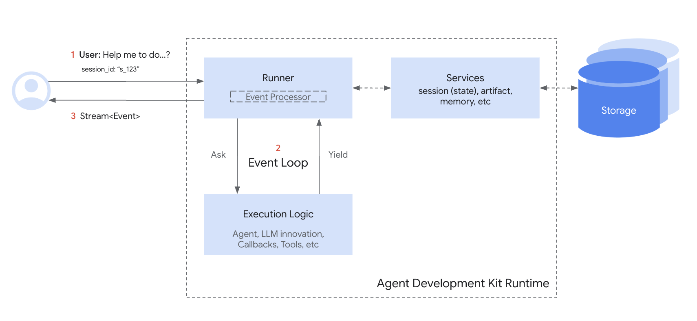

セッション：個別の会話の追跡¶
「はじめに」に続いて、Sessionについて詳しく見ていきましょう。「会話スレッド」という考え方を思い出してください。テキストメッセージを毎回最初から書き始めないのと同じように、エージェントも進行中の対話に関するコンテキストを必要とします。Sessionは、これらの個別の会話スレッドを追跡・管理するために特別に設計されたADKオブジェクトです。
Sessionオブジェクト¶
ユーザーがエージェントとの対話を開始すると、SessionServiceはSessionオブジェクト（google.adk.sessions.Session）を作成します。このオブジェクトは、その特定のチャットスレッド1つに関連するすべてを保持するコンテナとして機能します。主なプロパティは以下の通りです。
- 識別情報（
id,appName,userId）: 会話のための一意のラベルです。id: この特定の会話スレッドのための一意の識別子で、後で取得する際に不可欠です。SessionServiceオブジェクトは複数のSessionを扱うことができ、このフィールドはどの特定のセッションオブジェクトを参照しているかを識別します。例: "test_id_modification"。app_name: この会話が属するエージェントアプリケーションを識別します。例: "id_modifier_workflow"。userId: 会話を特定のユーザーにリンクさせます。
- 履歴（
events）: この特定のスレッド内で発生したすべての対話（Eventオブジェクト – ユーザーメッセージ、エージェントの応答、ツールのアクション）の時系列シーケンスです。 - セッション状態（
state）: 進行中のこの特定の会話にのみ関連する一時的なデータを保存する場所です。これは、対話中のエージェントのためのスクラッチパッド（一時的な作業領域）として機能します。stateの使用方法と管理方法については、次のセクションで詳しく説明します。 - アクティビティ追跡（
lastUpdateTime）: この会話スレッドで最後にイベントが発生した時刻を示すタイムスタンプです。
例：セッションプロパティの確認¶
from google.adk.sessions import InMemorySessionService, Session
# プロパティを確認するために簡単なセッションを作成
temp_service = InMemorySessionService()
example_session = await temp_service.create_session(
app_name="my_app",
user_id="example_user",
state={"initial_key": "initial_value"} # 状態は初期化可能
)
print(f"--- セッションプロパティの確認 ---")
print(f"ID (`id`): {example_session.id}")
print(f"アプリケーション名 (`app_name`): {example_session.app_name}")
print(f"ユーザーID (`user_id`): {example_session.user_id}")
print(f"状態 (`state`): {example_session.state}") # 注：ここでは初期状態のみ表示
print(f"イベント (`events`): {example_session.events}") # 初期状態は空
print(f"最終更新日時 (`last_update_time`): {example_session.last_update_time:.2f}")
print(f"---------------------------------")
# クリーンアップ（この例では任意）
temp_service = await temp_service.delete_session(app_name=example_session.app_name,
user_id=example_session.user_id, session_id=example_session.id)
print("temp_serviceの最終ステータス - ", temp_service)
appName := "my_go_app"
userID := "example_go_user"
initialState := map[string]any{"initial_key": "initial_value"}
// Create a session to examine its properties.
createResp, err := inMemoryService.Create(ctx, &session.CreateRequest{
AppName: appName,
UserID: userID,
State: initialState,
})
if err != nil {
log.Fatalf("Failed to create session: %v", err)
}
exampleSession := createResp.Session
fmt.Println("\n--- Examining Session Properties ---")
fmt.Printf("ID (`ID()`): %s\n", exampleSession.ID())
fmt.Printf("Application Name (`AppName()`): %s\n", exampleSession.AppName())
// To access state, you call Get().
val, _ := exampleSession.State().Get("initial_key")
fmt.Printf("State (`State().Get()`): initial_key = %v\n", val)
// Events are initially empty.
fmt.Printf("Events (`Events().Len()`): %d\n", exampleSession.Events().Len())
fmt.Printf("Last Update (`LastUpdateTime()`): %s\n", exampleSession.LastUpdateTime().Format("2006-01-02 15:04:05"))
fmt.Println("---------------------------------")
// Clean up the session.
err = inMemoryService.Delete(ctx, &session.DeleteRequest{
AppName: exampleSession.AppName(),
UserID: exampleSession.UserID(),
SessionID: exampleSession.ID(),
})
if err != nil {
log.Fatalf("Failed to delete session: %v", err)
}
fmt.Println("Session deleted successfully.")
import com.google.adk.sessions.InMemorySessionService;
import com.google.adk.sessions.Session;
import java.util.concurrent.ConcurrentMap;
import java.util.concurrent.ConcurrentHashMap;
String sessionId = "123";
String appName = "example-app"; // 例：アプリ名
String userId = "example-user"; // 例：ユーザーID
ConcurrentMap<String, Object> initialState = new ConcurrentHashMap<>(Map.of("newKey", "newValue"));
InMemorySessionService exampleSessionService = new InMemorySessionService();
// セッションの作成
Session exampleSession = exampleSessionService.createSession(
appName, userId, initialState, Optional.of(sessionId)).blockingGet();
System.out.println("セッションが正常に作成されました。");
System.out.println("--- セッションプロパティの確認 ---");
System.out.printf("ID (`id`): %s%n", exampleSession.id());
System.out.printf("アプリケーション名 (`appName`): %s%n", exampleSession.appName());
System.out.printf("ユーザーID (`userId`): %s%n", exampleSession.userId());
System.out.printf("状態 (`state`): %s%n", exampleSession.state());
System.out.println("------------------------------------");
// クリーンアップ（この例では任意）
var unused = exampleSessionService.deleteSession(appName, userId, sessionId);
(注：上記で示されている状態は初期状態のみです。状態の更新は、「状態」セクションで説明するように、イベントを介して行われます。)*
SessionServiceによるセッション管理¶
上記で見たように、通常はSessionオブジェクトを直接作成または管理しません。代わりにSessionServiceを使用します。このサービスは、会話セッションのライフサイクル全体を担当する中央マネージャーとして機能します。
その主な責務は以下の通りです。
- 新しい会話の開始: ユーザーが対話を開始したときに、新しい
Sessionオブジェクトを作成します。 - 既存の会話の再開: エージェントが中断したところから続行できるように、特定の
Sessionを（IDを使用して）取得します。 - 進捗の保存: 新しい対話（
Eventオブジェクト）をセッションの履歴に追加します。これはセッションのstateが更新されるメカニズムでもあります（詳細はStateセクションで）。 - 会話の一覧表示: 特定のユーザーとアプリケーションのアクティブなセッションスレッドを検索します。
- クリーンアップ: 会話が終了した、または不要になった場合に、
Sessionオブジェクトとそれに関連するデータを削除します。
SessionServiceの実装¶
ADKは、ニーズに最も適したストレージバックエンドを選択できるように、さまざまなSessionServiceの実装を提供します。
-
InMemorySessionService- 仕組み: すべてのセッションデータをアプリケーションのメモリに直接保存します。
- 永続性: なし。アプリケーションが再起動すると、すべての会話データが失われます。
- 要件: 追加要件なし。
- 最適な用途: 迅速な開発、ローカルテスト、サンプル、および長期的な永続性が不要なシナリオ。
-
VertexAiSessionService- 仕組み: API呼び出しを介してGoogle Cloud Vertex AIインフラストラクチャをセッション管理に使用します。
- 永続性: あり。データはVertex AI Agent Engineを介して信頼性が高く、スケーラブルに管理されます。
- 要件:
- Google Cloudプロジェクト（
pip install vertexai） - この手順で設定可能なGoogle Cloud Storageバケット。
- このチュートリアルに従って設定できるReasoning Engineのリソース名/ID。
- Google Cloudプロジェクトをお持ちでなく、VertexAiSessionServiceを無料で試したい場合は、セッションとメモリを無料で試すをご覧ください。
- Google Cloudプロジェクト（
- 最適な用途: Google Cloudにデプロイされたスケーラブルな本番アプリケーション、特に他のVertex AI機能と統合する場合。
# 要件: pip install google-adk[vertexai] # さらにGCPのセットアップと認証が必要 from google.adk.sessions import VertexAiSessionService PROJECT_ID = "your-gcp-project-id" LOCATION = "us-central1" # このサービスで使用するapp_nameはReasoning EngineのIDまたは名前である必要があります REASONING_ENGINE_APP_NAME = "projects/your-gcp-project-id/locations/us-central1/reasoningEngines/your-engine-id" session_service = VertexAiSessionService(project=PROJECT_ID, location=LOCATION) # サービスメソッドを呼び出す際にREASONING_ENGINE_APP_NAMEを使用します。例： # session_service = await session_service.create_session(app_name=REASONING_ENGINE_APP_NAME, ...)import "google.golang.org/adk/session" // 2. VertexAIService // 実行前に、環境が認証されていることを確認してください： // gcloud auth application-default login // export GOOGLE_CLOUD_PROJECT="your-gcp-project-id" // export GOOGLE_CLOUD_LOCATION="your-gcp-location" modelName := "gemini-1.5-flash-001" // 希望のモデルに置き換えてください vertexService, err := session.VertexAIService(ctx, modelName) if err != nil { log.Printf("VertexAIServiceを初期化できませんでした（gcloudプロジェクトが設定されていない場合は想定内の動作です）: %v", err) } else { fmt.Println("VertexAIServiceの初期化に成功しました。") }// 上記の要件セットを確認し、bashrcファイルに以下をエクスポートしてください： // export GOOGLE_CLOUD_PROJECT=my_gcp_project // export GOOGLE_CLOUD_LOCATION=us-central1 // export GOOGLE_API_KEY=my_api_key import com.google.adk.sessions.VertexAiSessionService; import java.util.UUID; String sessionId = UUID.randomUUID().toString(); String reasoningEngineAppName = "123456789"; String userId = "u_123"; // 例：ユーザーID ConcurrentMap<String, Object> initialState = new ConcurrentHashMap<>(); // この例では初期状態は不要です VertexAiSessionService sessionService = new VertexAiSessionService(); Session mySession = sessionService .createSession(reasoningEngineAppName, userId, initialState, Optional.of(sessionId)) .blockingGet(); -
DatabaseSessionServiceADKでサポートPython v0.1.0Go v0.1.0- 仕組み: リレーショナルデータベース（例：PostgreSQL, MySQL, SQLite）に接続し、セッションデータをテーブルに永続的に保存します。
- 永続性: あり。データはアプリケーションの再起動後も存続します。
- 要件: 設定済みのデータベース。
- 最適な用途: 自身で管理する、信頼性の高い永続ストレージを必要とするアプリケーション。
適切なSessionServiceを選択することは、エージェントの会話履歴と一時データがどのように保存され、永続化されるかを定義する鍵となります。
セッションのライフサイクル¶

会話の1ターン中にSessionとSessionServiceがどのように連携して動作するかの単純化されたフローは以下の通りです。
- 開始または再開: アプリケーションは
SessionServiceを使用してcreate_session（新しいチャットの場合）を実行するか、既存のセッションIDを使用する必要があります。 - コンテキストの提供:
Runnerは適切なサービスメソッドからSessionオブジェクトを取得し、エージェントが対応するセッションのstateとeventsにアクセスできるようにします。 - エージェントの処理: ユーザーがエージェントにクエリを送信します。エージェントはクエリと、場合によってはセッションの
stateおよびevents履歴を分析して応答を決定します。 - 応答と状態の更新: エージェントは応答を生成し（場合によっては
stateで更新されるデータをフラグ付けし）、RunnerはこれをEventとしてパッケージ化します。 - 対話の保存:
Runnerはsessionと新しいeventを引数としてsessionService.append_event(session, event)を呼び出します。サービスはEventを履歴に追加し、イベント内の情報に基づいてストレージ内のセッションのstateを更新します。セッションのlast_update_timeも更新されます。 - 次の準備: エージェントの応答がユーザーに送信されます。更新された
SessionはSessionServiceによって保存され、次のターンの準備が整います（通常、現在のセッションでの会話の続きとして、サイクルはステップ1から再開されます）。 - 会話の終了: 会話が終了し、保存されたセッションデータが不要になった場合、アプリケーションは
sessionService.delete_session(...)を呼び出してクリーンアップします。
このサイクルは、SessionServiceが各Sessionオブジェクトに関連付けられた履歴と状態を管理することによって、会話の継続性をどのように保証するかを示しています。